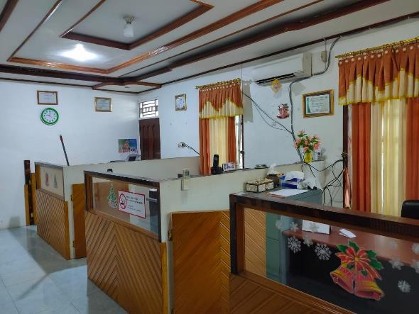

Pemilik Perusahaan
Sekinus Murib
Lahir pada tahun 1967 di Paniai, merupakan salah satu Putra Daerah asli Papua dari Suku Dani di antara 7 Suku dan menetap di Kabupaten Mimika.

Hasil kerja keras dan ketekunan pendiri kami, Sekinus Murib — putra daerah asli Papua — yang merintis usaha sejak 1996.
Berbekal pengetahuan dari pelatihan inkubator bisnis yang diselenggarakan oleh Social Local Development (SLD) Dept. PT. Freeport Indonesia kepada wirausahawan putra daerah dari 7 suku, Sekinus Murib mendirikan CV. Yawi Raya (YR) pada tahun 1996, di bawah pengawasan dan binaan langsung Departemen SLD.
Pada tanggal 5 Mei 2006, CV. Yawi Raya berubah menjadi PT. Yawiraya Bina Mandiri, berlokasi di Jl. Pendidikan Jalur 1 No. 5 Timika – Papua, dan sejak itu tidak lagi menjadi binaan SLD. Perusahaan memulai usaha sebagai kontraktor yang fokus pada unit bisnis Scaffolding dan Painting.
Produk dan jasa kami selalu memperhatikan mutu yang berkualitas, didorong oleh motivasi integritas, ketekunan belajar dan pemikiran terbuka untuk memberikan kepuasan customer. Kini perusahaan telah berkembang ke industri kontraktor konstruksi, pemeliharaan fasilitas dan bangunan, penyediaan jasa tenaga kerja serta perdagangan umum.

Menjadi salah satu Perusahaan Kontraktor Putra Daerah Papua terbaik dan menghasilkan Tenaga Kerja berskala Nasional, lebih khusus Tenaga Kerja lokal Papua yang berkualitas dan berhasil guna, bergerak di bidang Jasa Konstruksi, perawatan bangunan & Jasa pemasok Tenaga Kerja.
Mengembangkan Sumber Daya Manusia, terutama Orang Asli Papua dengan meningkatkan kompetensi bagi setiap individu yang berkompeten.
Mengembangkan operasi perusahaan yang sehat dalam segala aspek dengan memenuhi peraturan yang berlaku.
Memberikan pelayanan yang berkualitas dan kepuasan pelanggan.
Menjalin hubungan baik dengan mitra kerja berdasarkan komitmen bersama.
Meningkatkan rasa kepedulian yang tinggi dan tanggung jawab bersama untuk menghasilkan lingkungan yang harmonis, peningkatan produksi dan kesejahteraan bersama.
Mengoptimalkan operasional dengan mengutamakan keberlanjutan Keselamatan, Kesehatan Kerja dan Lingkungan sekitarnya.
Pemilik Perusahaan
Lahir pada tahun 1967 di Paniai, merupakan salah satu Putra Daerah asli Papua dari Suku Dani di antara 7 Suku dan menetap di Kabupaten Mimika.

Komisaris
Putra sulung dari Bapak Sekinus Murib yang saat ini menjabat sebagai Komisaris di perusahaan dan aktif menjalankan manajemen perusahaan.

General Manager & PJO
Dipercayakan sebagai General Manager sekaligus Penanggung Jawab Operasional (PJO) untuk mengelola perusahaan secara operasional dan menjalankan sistem K3.
Manajemen berkeyakinan bahwa karyawan adalah aset utama perusahaan. Kami memprioritaskan putra daerah, membangun mental, spiritual serta kedisiplinan kerja. Seluruh karyawan mengikuti training keahlian dan diikutsertakan dalam program Jamsostek.
Total tenaga ahli & manpower
184